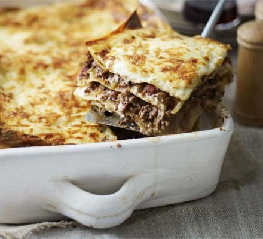

Nana's lasagna

This lasagna certainly isn't close to its Italian origins but there is a reason it is a favourite
in our family. Let's face it, cheesy bechamel layered with a rich tomato ragu and lasagna sheets
is always going to be delicious. You can serve this with a side salad or some vegetables, but it
is substantial enough to have on its own.
Ingredients
- 500g minced beef
- 1 tin of tomatoes
- 1 white onion, finely diced
- 3 cloves of garlic, minced
- Dried oregano
- 2 tblsp olive oil
- 100g medium or mature cheddar, grated
- 750 ml milk
- 50g unsalted butter
- 50g plain flour
- Bay leaf
- About 300g dried lasagna sheets
- 50g parmesan, grated
Steps
-
Start by making the tomato ragu. Gently cook the onion in the olive oil over a low-medium heat
until it becomes translucent, around 15 mins. Then add the garlic and cook for about 3 minutes
more.
-
Turn the heat up to medium, then add the minced beef into the pan with the onion and garlic.
Cook the mince, stirring, until it is brown all over and no pink remains.
-
When the mince is cooked, add the tinned tomatoes, a pinch of oregano and salt and pepper. Cook
for around 10 mins until the tomatoes have thickened and lost some of their liquid. Take the pan
off the heat and set aside.
-
Put your oven on at 180 fan, 200 conventional. Now it's time to make the cheese sauce! Put a pan on medium
heat and melt the butter.
-
When the butter is completely melted, add the flour to the pan and stir with a wooden spoon until it forms
a paste. Cook this paste, stirring, for a minute.
-
Take the pan off the heat temporarily and pour in a small amount of the milk. Use a whisk to mix the butter
and flour paste into the milk, whisking vigourously until all lumps are gone. Add about a third of the remaining
milk then whisk again, and repeat until you have mixed all the milk in and you have a smooth mixture.
-
Return the pan to the heat, whisking occassionally, until it starts to bubble. When it starts bubbling, cook it until
the sauce thickens up, this should be about 2 minutes after it starts bubbling. Then take the pan off the heat and
add the grated cheddar and stir until it has melted in.
-
In your lasagna dish, start with a layer of dried lasagna, then the meat sauce, then cheese sauce and repeat twice.
Add the grated parmesan to the top, then cook for half an hour until the lasagna is golden and bubbling. Enjoy!